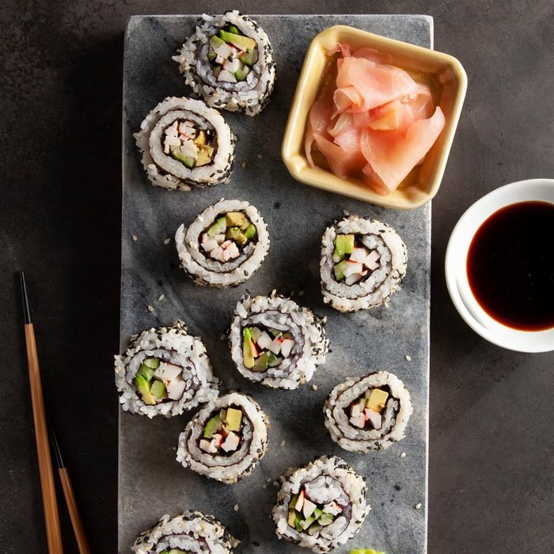

California Rolls

We all start somewhere!
This tastes as good as any restaurant or store-bought California roll.
Plus, it's one of the easiest sushi recipes for when you're first learning
Ingredients
- 2 cups sushi rice, rinsed and drained
- 2 cups water
- 1/4 cup rice vinegar
- 2 tablespoons sugar
- 1/2 teaspoon salt
- 2 tablespoons sesame seeds, toasted
- 2 tablespoons black sesame seeds
- Bamboo sushi mat
- 8 nori sheets
- 1 small cucumber, seeded and julienned
- 3 ounces imitation crabmeat sticks, julienned
- 1 medium ripe avocado, peeled and julienned
- Optional: Reduced-sodium soy sauce, prepared wasabi and pickled ginger slices
Directions
- In a large saucepan, combine rice and water; let stand for 30 minutes. Bring to a boil. Reduce heat to low; cover and simmer for 15-20 minutes or until water is absorbed and rice is tender. Remove from the heat. Let stand, covered, for 10 minutes.
- Meanwhile, in small bowl, combine the vinegar, sugar and salt, stirring until sugar is dissolved.
- Transfer rice to a large shallow bowl; drizzle with vinegar mixture. With a wooden paddle or spoon, stir rice with a slicing motion to cool slightly. Cover with a damp cloth to keep moist. (Rice mixture may be made up to 2 hours ahead and stored at room temperature, covered with a damp towel. Do not refrigerate.)
- Sprinkle toasted and black sesame seeds onto a plate; set aside. Place sushi mat on a work surface so mat rolls away from you; line with plastic wrap. Place 3/4 cup rice on plastic. With moistened fingers, press rice into an 8-in. square. Top with 1 nori sheet.
- Arrange a small amount of cucumber, crab and avocado about 1-1/2 in. from bottom edge of nori sheet. Roll up rice mixture over filling, using the bamboo mat to lift and compress the mixture while rolling; remove plastic wrap as you roll.
- Remove mat; roll sushi rolls in sesame seeds. Cover with plastic wrap. Repeat with remaining ingredients to make 8 rolls. Cut each into 8 pieces. Serve with soy sauce, wasabi and ginger slices if desired.